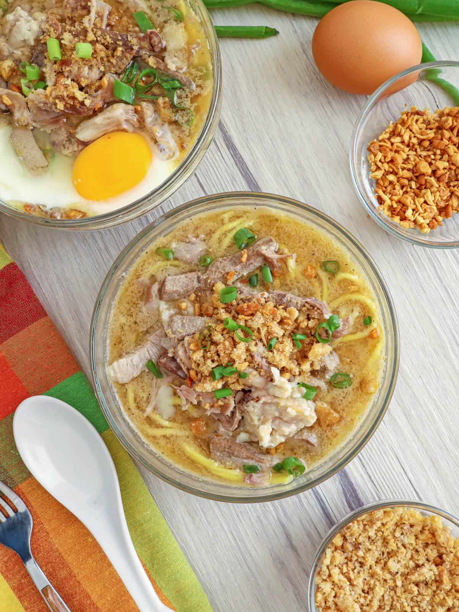

Description
This Filipino noodle soup recipe is so flavourful and filling that it will surely warm you up during colder seasons! This recipe was originally published on Kawalingpinoy.com.

Ingredients
2 pounds beef bones, with marrow
1/2 pound pork intestines, cleaned
1 red onion, peeled and minced
2 cloves garlic, peeled and minced
1 tablespoon sauteed shrimp paste
2 package (16 ounces each) fresh miki noodles
For the Toppings
pork cracklings (chicharon), crushed
8 whole raw eggs, optional
Instructions
- In a deep pot, bring enough water to cover bones to a boil. Add bones and boil, skimming scum that floats on top, for about 10 minutes. Drain bones and discard liquid.
- Under cold running water, rinse bones to rid of any scum. Rinse pot. Return the bones to the pot and enough cold water (about 10 to 12 cups) to cover. Bring to a boil, skimming scum that floats on top. Lower heat, cover, and simmer for about 2 hours.
- Using a colander, strain broth. Scrape off any attached meat from the bones and set aside. Using a small spoon, scoop out marrow from beef bones and set aside. Discard the bones.
- Return broth to the pot and bring to a boil. Add pork shoulder and pork intestines. Cook for about 30 to 40 minutes or until tender. With a slotted spoon, remove from pot and allow to slightly cool to touch. Slice into strips and set aside.
- Add liver to pot and cook for about 7 to 10 minutes. With a slotted spoon, remove from pot and allow to slight cool to touch. Slice into strips and set aside.
- Add onions and garlic to the pot of hot broth. Cook for about 2 to 3 minutes or until onions and garlic are softened.
- Add shrimp paste and stir until dispersed. Add sugar and MSG. Season with rock salt and pepper to taste.
- In a saucepot, bring about 3 quarts of water to a boil. Using a strainer basket, submerge noodles for about 30 to 40 seconds. Drain well and divide into serving bowls.
- Ladle hot broth over the noodles. Top with sliced pork, intestines, liver, and any scrap meat from bones. Divide bone marrow into each bowl, if desired.
- Garnish with chicharon, fried garlic bits, and green onions.
- Crack a raw egg into each bowl, if desired. Serve hot.